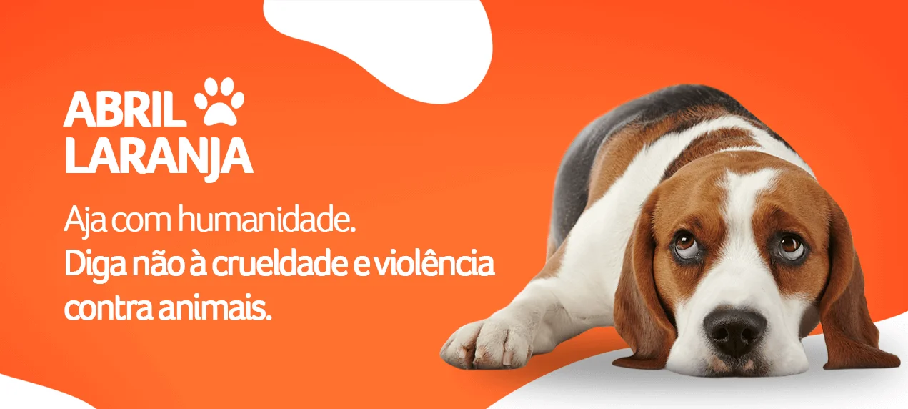

Combate a Crueldade Animal |
|
|
Página Inicial Campanhas ONGs Leis Sobre |
Abril LaranjaAbril Laranja é o mês dedicado à conscientização e prevenção contra a crueldade aos animais. O Brasil
ocupa a terceira posição no ranking  O Abril Laranja não é apenas um mês de conscientização, mas um convite à ação. Vamos transformar nossas atitudes e garantir respeito e carinho aos pets. |
| Julio Vieira - Lucas Zelioli - 1C3 - Site Educacional | |